CLAUDE’S PICK


Amazon Bedrock: 의미론적·텍스트 기반 하이브리드 검색 RAG 에이전트

LLM 기반 에이전트 보조자가 실시간 데이터 검색을 통해 정확한 응답을 제공할 때, 검색 품질이 생성 응답의 정확도를 크게 좌우한다는 문제가 있다. Amazon Bedrock AgentCore와 Amazon OpenSearch를 결합하여 의미론적 검색과 텍스트 기반 검색을 동시에 활용하는 하이브리드 검색 방식으로 이를 해결한다. 이를 통해 호텔 예약 같은 복잡한 업무에서 사용자 요구사항과 실시간 정보를 정확하게 검색하고 통합하여 제공할 수 있다.
핵심 포인트: 핵심 기여: Retrieval-Augmented Generation 워크플로우에서 의미론적 검색과 텍스트 기반 검색의 하이브리드 접근으로 검색 정확도를 향상시키고, Strands Agents를 통해 다단계 대화 흐름에서 동적 데이터 검색을 자동화한다.
🔗 aws.amazon.com/blogs/machine-learning/ama…
블로그 (Blog)
CLI-Anything: GUI 소프트웨어를 AI 에이전트용 CLI로 자동 변환
AI 에이전트는 마우스 클릭을 수행할 수 없어 GUI 소프트웨어를 활용하지 못하는 문제가 있다. CLI-Anything은 소프트웨어의 소스 코드를 분석하여 GUI 동작을 CLI 명령어로 자동 매핑함으로써 이를 해결한다. GIMP, Blender, LibreOffice, OBS Studio 등 주요 소프트웨어를 지원하며, 단 한 줄의 명령어로 마우스 클릭 기반 작업을 터미널에서 수행할 수 있게 한다. 깃허브 스타 2만 3천 개로 커뮤니티 기반 확장이 활발하다.
핵심 포인트: 핵심 기여: 23,000+ 깃허브 스타를 기록한 오픈소스 프로젝트로 GIMP, Blender, LibreOffice, OBS Studio 등 7개 이상의 소프트웨어를 지원하며, Claude Code를 포함한 AI 코드 플랫폼과 통합되어 AI 에이전트의 소프트웨어 조작 능력을 획기적으로 확장한다.
🔗 github.com/browser-use/browser-use
GitHub
agent-skills — AI 코딩 에이전트에 시니어 엔지니어의 워크플로 심기

AI 코딩 에이전트는 빠른 완성에 최적화되어 있어 스펙 검토, 테스트, 보안 리뷰 등 품질 관리 단계를 건너뛰는 경향을 보인다. agent-skills는 구글 클라우드 AI 디렉터 Addy Osmani가 개발한 오픈소스 프로젝트로, 시니어 엔지니어의 19가지 워크플로를 구조화된 스킬팩으로 제공해 에이전트가 정의, 계획, 빌드, 검증, 리뷰, 배포의 전 개발 단계에서 일관된 품질 기준을 따르도록 한다.
핵심 포인트: 핵심 기여: DEFINE-PLAN-BUILD-VERIFY-REVIEW-SHIP의 6단계 개발 생명주기를 7개 슬래시 커맨드로 자동화하며, 마크다운 기반의 19개 시니어 엔지니어 워크플로를 에이전트에게 습관화시켜 production-grade 코드 품질을 보장한다.
🔗 github.com/unclejobs-ai/second-claude-code
GitHub
AI & RESEARCH

Gemma 4 vs Qwen 3.5: 오픈소스 LLM 벤치마크 비교
구글의 31B 규모 오픈소스 LLM인 Gemma 4가 프론티어 모델 Gemini 3 Flash에 근접한 높은 성능을 보이고 있다. 그러나 중국의 Qwen 3.5 27B 모델이 더 적은 파라미터로 더 높은 스코어를 달성하고 있다. 이 차이는 아키텍처의 차이에서 비롯되는데, Qwen 3.5는 Gated Delta Network와 GQA 하이브리드 구조로 컨텍스트 확장 시 KV 캐시 증가를 1~2GB 수준으로 억제하는 반면, Gemma 4의 풀 dense 구조는 256K 컨텍스트에서 40GB까지 VRAM이 상승한다.
핵심 포인트: 핵심 성과: Qwen 3.5 27B가 Gemma 4 31B보다 적은 리소스로 더 높은 벤치마크 스코어를 달성했으며, 혁신적인 아키텍처를 통해 KV 캐시 증가를 1~2GB 수준으로 제한하면서 효율성 격차를 입증했다.
🔗 reddit.com/r/Bard/comments/1sam5uq/gemma…
블로그 (Blog)
TurboQuant — 정확도 손실 없이 LLM 모델 사이즈 압축
LLM 추론 최적화 시 정확도와 속도 중 하나를 포기해야 하는 문제를 해결하는 구글의 양자화 기법. TurboQuant는 Zero accuracy loss 조건에서 모델 사이즈를 감소시키며, 특히 메모리 병목인 KV 캐시 압축과 벡터 검색에 효과적이다. cuTile 기반 CUDA 최적화와 PyTorch 지원으로 실무 적용이 간편하며, pip install turboquant-gpu로 쉽게 설치 가능하다.
핵심 포인트: 핵심 성과: 정확도 손실 없이 KV 캐시 압축 및 모델 크기 축소 달성, cuTile(CUDA 12, 13) 기반으로 GPU 추론 최적화 구현, PyTorch 통합으로 즉시 실무 배포 가능
🔗 github.com/DevTechJr/turboquant-gpu
GitHub
Claude Mythos Preview — AI가 27년 숨겨진 제로데이 취약점 발견
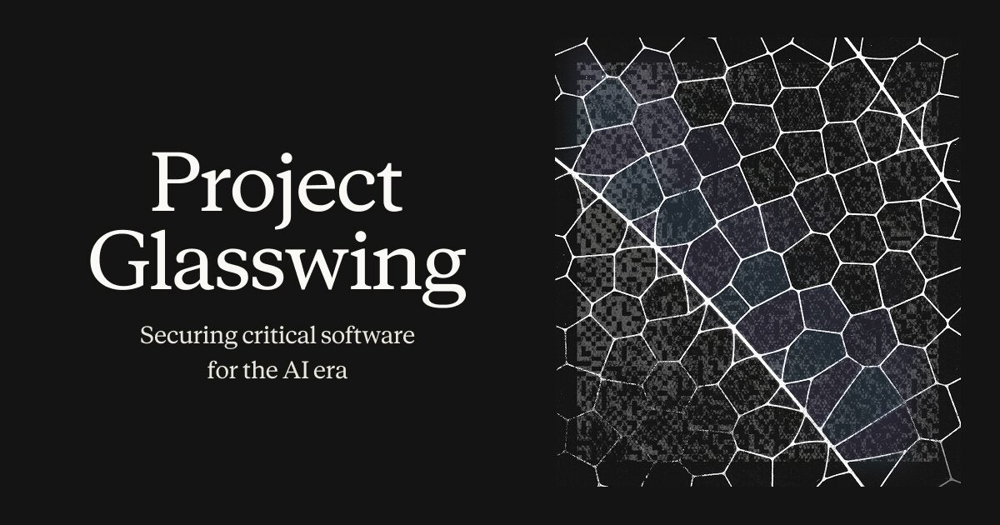
기존 AI 모델도 찾기 어려운 제로데이 취약점 탐지가 AI 보안 위협으로 대두되고 있다. Anthropic이 공개한 Claude Mythos Preview는 SWE-bench Verified 점수 93.9%로 모든 주요 운영체제와 웹 브라우저에서 수천 개의 미공개 취약점을 발견했으며, OpenBSD의 27년간 숨겨진 버그까지 찾아냈다. Anthropic은 이 강력한 모델의 악용을 방지하기 위해 Project Glasswing을 시작해 핵심 방어자들과 협력하며, 기업들은 기존 AI 모델로 방어 체계를 강화하고 보안 패치 주기를 단축해야 한다.
핵심 포인트: 핵심 성과: Claude Mythos Preview는 SWE-bench Verified 점수 93.9%로 이전 최고 모델 Claude Opus(80.8%)를 크게 상회하며, 수천 개의 제로데이 취약점 발견 및 실제 공격 가능한 익스플로잇 개발 능력을 갖춤.
기타 (Others)
LangChain: AI 에이전트 지속 학습의 3가지 레이어 설계

AI 에이전트의 지속 학습이 모델 가중치 업데이트만으로는 부족하다는 문제를 제시한다. LangChain은 에이전트 시스템을 모델(가중치), 하네스(구동 코드 및 도구), 컨텍스트(외부 주입 지시문과 스킬) 3가지 레이어로 정리하여, 각 레이어를 적절히 설계함으로써 시스템 고도화를 달성하는 접근 방식을 제시한다.
핵심 포인트: 핵심 기여: 무거운 모델 재학습에만 의존하는 대신 하네스와 컨텍스트 설계를 통해 에이전트 성능을 향상시키는 다층적 학습 전략을 제공하며, 이는 실무 에이전트 구축의 실질적 기준점을 제시한다.
🔗 blog.langchain.com/continual-learning-for…
블로그 (Blog)
LLM Wiki — 안드레 카파시의 AI 기반 개인 지식 베이스 자동 구축
기존 RAG 방식에서는 질문할 때마다 문서를 새로 검색해야 하는 비효율이 있다. LLM Wiki는 원문 자료를 입력하면 LLM이 자동으로 내용을 요약하고, 기존 정보와 교차 검증하며, 문서 간 링크를 연결해 마크다운 형태의 개인 위키를 지속적으로 구축한다. 사용자는 자료 수집과 핵심 질문만 제시하고, AI가 문서 정리와 내용 최신화를 자동으로 관리하는 구조이다.
핵심 포인트: 핵심 성과: 안드레 카파시가 공개한 개념이 24시간 만에 270만 회 조회를 기록하며 개발자들 사이에서 폭발적 반응을 얻었으며, 복잡한 RAG 기술 없이도 수십만 단어의 문서 요약, 개념 분류, 오류 검증을 자동으로 수행한다.
🔗 gist.github.com/karpathy/442a6bf555914893…
GitHub
Gemma 4 — 구글의 오픈소스 AI 모델로 기업 데이터 주권 확보
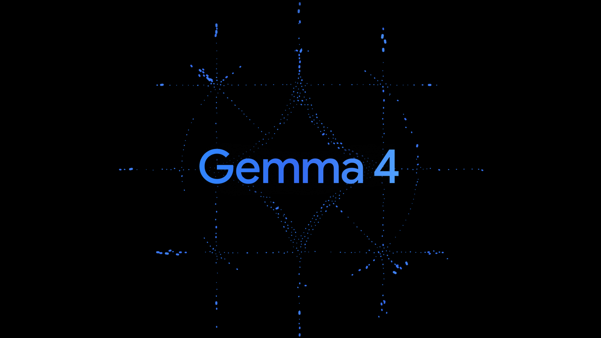
기업들이 외부 API에 의존하지 않고 자체 데이터를 보호하면서 강력한 AI를 구축하려는 수요가 있었다. 구글이 Gemma 4를 Apache 2.0 라이선스로 공개하면서 이 문제를 해결했다. 31B 모델은 20배 큰 상용 모델을 압도하며 Arena AI 오픈 모델 3위를 기록했고, 26B MoE 모델은 추론 시 38억 개 파라미터만 활성화하여 빠른 속도를 제공한다. 128K~256K의 긴 컨텍스트 윈도우로 전체 저장소와 문서를 한 번에 처리할 수 있으며, 양자화를 통해 소비자용 GPU에서도 로컬 실행이 가능하다.
핵심 포인트: 핵심 성과: 31B 모델이 오픈 소스 모델 중 전 세계 3위 성능 달성, 26B MoE는 38억 파라미터만 활성화하여 극도의 효율성 제공, 단일 H100 GPU 또는 양자화 후 소비자용 GPU에서 로컬 실행 가능, 256K 컨텍스트 윈도우로 전체 코드베이스 및 문서 처리 가능.
🔗 blog.google/innovation-and-ai/technology…
기타 (Others)
AttentionPack: VLM 메모리 21배 감소 및 처리 속도 2배 향상
VLM 추론 시 KV 캐시 메모리 부족으로 인한 성능 저하 문제를 해결하는 프레임워크. SVD 기반 압축으로 헤드 간 정보를 효율적으로 압축하고, 중요 토큰은 완전 복원, 덜 중요한 토큰은 부분 복원하여 메모리를 328MB에서 15MB로 줄인다. 재학습 없이 4-bit 양자화와 결합하면 LLaVA 기준 메모리 1/21 감소, 속도 115% 향상을 달성한다.
핵심 포인트: 핵심 성과: KV 캐시 메모리 21배 감소(328MB → 15MB), 연산량 67% 절감, 처리 속도 115% 향상, 파인튜닝 불필요로 RTX 3060 같은 보급형 환경에서 로컬 AI 실행 가능
논문 (Papers)
Claude Code — 동일 모델도 하네스 설계에 따라 성능 38배 차이
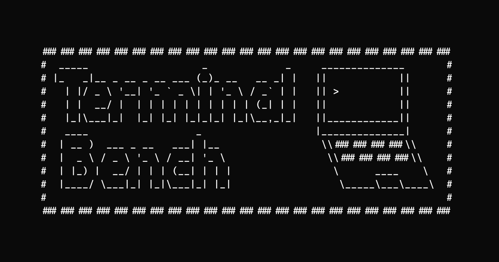
앤트로픽의 공식 코딩 도구 Claude Code가 자사 최고 모델 Opus 4.6을 사용했음에도 Terminal-Bench 코딩 벤치마크에서 38개의 서드파티 도구에 뒤처지는 결과가 나왔다. 이는 AI의 실제 성능이 베이스 모델의 능력보다 시스템 프롬프트, 제어 구조 등 하네스 설계에 크게 좌우됨을 보여준다. 동일한 엔진을 사용해도 이를 감싸는 인터페이스와 조련 방식에 따라 결과가 극명하게 달라진다.
핵심 포인트: 핵심 시사점: 실무 환경에 맞춘 하네스 설계와 모델 조련이 단순 모델 개선보다 실질적 성능 차별화의 핵심 경쟁 요소임을 실증적으로 입증. 동일 모델 기반 38개 도구와의 성능 격차는 AI 제품화 단계에서 프롬프트 엔지니어링과 시스템 아키텍처 최적화의 중요성을 강조.
🔗 tbench.ai/leaderboard/terminal-bench/2.0?…
기타 (Others)
TimesFM — 구글의 시계열 예측 파운데이션 모델
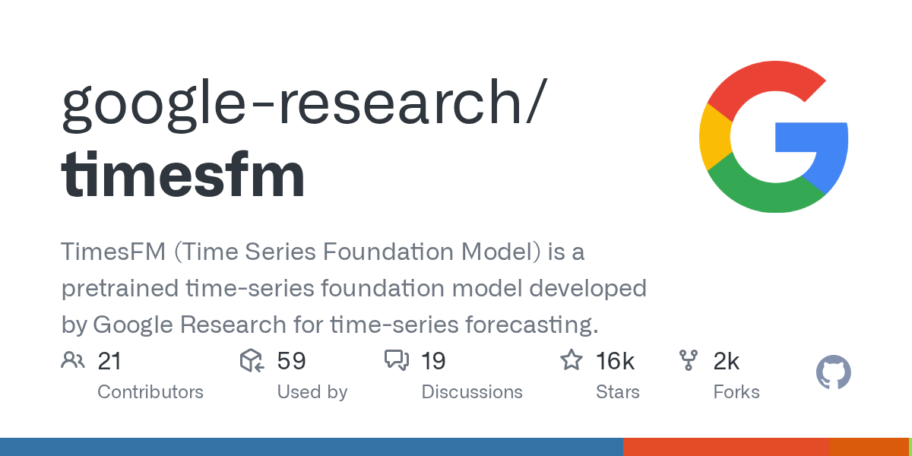
시계열 데이터 예측 시 별도 모델 학습이 필요한 문제를 해결하는 구글 리서치의 사전 훈련 파운데이션 모델. 별도 학습 없이 사전 훈련된 모델로 즉시 예측이 가능하며, JAX와 PyTorch를 모두 지원하고 Apple Silicon을 포함한 다양한 환경에서 동작한다. 최근 업데이트로 추론 속도가 향상되었고, 외부 변수를 함께 활용한 예측 기능도 추가되어 수요 예측과 센서 데이터 분석 등 실무 적용에 즉시 활용 가능하다.
핵심 포인트: 핵심 성과: 모델 재학습 없이 즉시 시계열 예측 가능하며, 최근 업데이트로 추론 속도 개선 및 외부 변수 통합 예측 기능 추가. GitHub 트렌딩 3위 달성으로 시계열 데이터 활용 팀의 현실적 출발점 제시.
🔗 github.com/mvanhorn/last30days-skill
GitHub
PaperOrchestra: 다중 에이전트 기반 자동 AI 논문 작성 시스템
자동 연구 프레임워크는 실험 실행은 가능하지만 논문 작성 모듈이 가장 약한 부분이다는 문제를 해결한다. PaperOrchestra는 전처리 자료, 실험 로그, 노트를 제출 완성형 LaTeX 원고로 변환하는 다중 에이전트 시스템이다. 문헌 종합, 플롯 생성, 개념 다이어그램 생성, 반복 개선을 담당하는 특화된 에이전트들을 활용하며, 200개 상위 학회 논문으로 역설계한 벤치마크 PaperWritingBench도 함께 공개했다.
핵심 포인트: 핵심 성과: 인간 평가에서 문헌 리뷰 품질 5068% 절대 승률 마진, 전체 원고 품질 1438% 개선을 기존 자동화 방식 대비 달성했다.
논문 (Papers)
DEVTOOLS & OPEN SOURCE

QMD — 로컬에서 동작하는 3단 하이브리드 검색 엔진
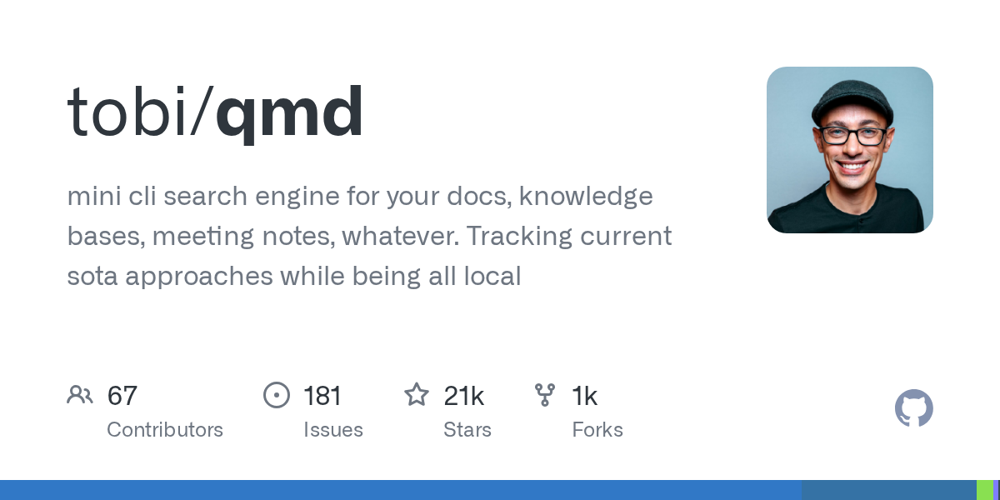
로컬 문서 검색 시 벡터 DB 구축, 임베딩 파이프라인 작성, 클라우드 API 키 설정이 필요한 문제를 해결하는 로컬 CLI 검색 엔진. QMD는 npm 한 줄 설치로 BM25 키워드 매칭, 벡터 의미 검색, LLM 리랭킹을 로컬에서 즉시 실행하며, 적응형 검색 전략으로 정확한 쿼리는 BM25만 사용하고 모호한 쿼리에만 LLM을 활용해 불필요한 연산을 줄인다.
핵심 포인트: 핵심 성과: 자체 파인튜닝한 1.7B 쿼리 확장 모델(Qwen3 기반, LoRA rank-16)을 내장하고, RRF 퓨전과 LLM 리랭킹으로 검색 품질을 유지하면서 외부 API 의존도 완전 제거.
GitHub
Graphify — LLM 기반 코드베이스 지식그래프 자동 생성 도구
대규모 코드베이스나 문서를 LLM에 직접 입력하면 토큰 사용량이 급증하고 정확도가 떨어지는 문제를 해결하는 오픈소스 도구. Graphify는 입력된 폴더를 자동으로 지식 그래프로 구조화한 후, 사용자의 질의에 필요한 노드만 선택적으로 읽어 쿼리당 토큰 사용량을 71.5배 절감한다. 별도 설정 없이 한 줄 설치 후 Claude Code에서 바로 실행 가능하며, 13개 프로그래밍 언어와 PDF, 이미지, 마크다운을 지원한다.
핵심 포인트: 핵심 성과: 쿼리당 토큰 사용량 71.5배 절감, 48시간 내 개발 완료, 설치 한 줄(pip install graphify && graphify install)로 사용 가능하며 13개 언어와 PDF/이미지 지원
🔗 linkedin.com/posts/seungpil_github-safish…
기타 (Others)
LMCache — LLM 응답 지연시간 최대 10배 단축
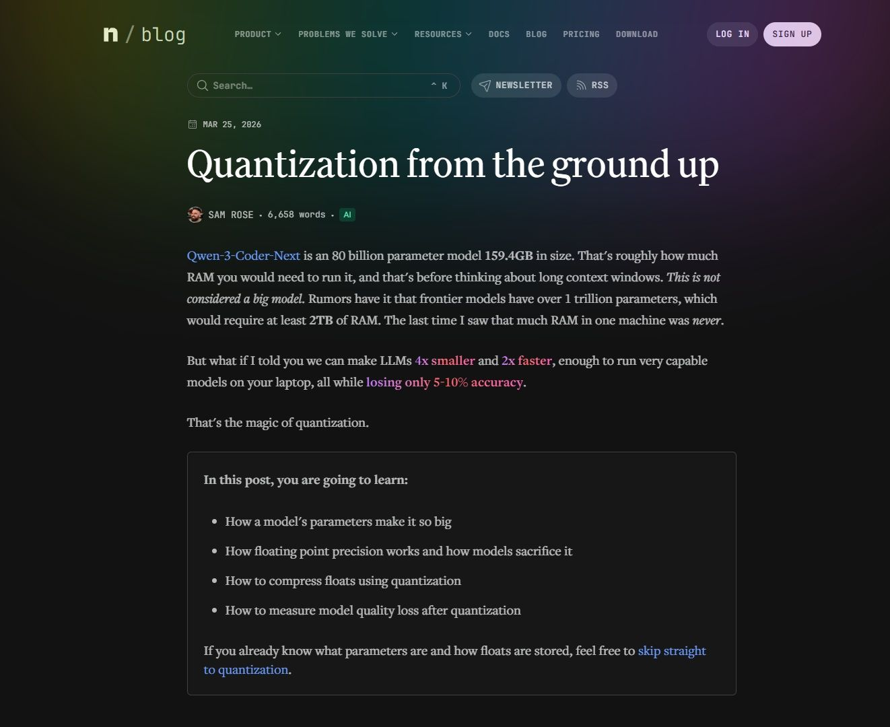
RAG와 긴 컨텍스트 LLM 환경에서 첫 응답 시간(TTFT)이 느린 문제를 해결하는 KV 캐시 최적화 도구. 중복되는 텍스트의 KV 캐시를 GPU, CPU 메모리, 로컬 디스크에 저장하고 필요 시 재사용하여 반복 계산을 제거한다. vLLM과 결합 시 멀티턴 QA와 RAG 환경에서 3~10배의 지연시간 감소를 달성하며, 비용 효율적인 GPU 연산으로 사용자 체감 응답 속도를 대폭 향상시킨다.
핵심 포인트: 핵심 성과: 멀티턴 QA 및 RAG 환경에서 지연시간 3~10배 단축, 중복 텍스트에 대한 KV 캐시 재사용으로 GPU 연산량 감소 및 응답 속도 획기적 개선
GitHub
MemPalace — 고대 기억술을 AI에 적용한 최고 성능 메모리 시스템
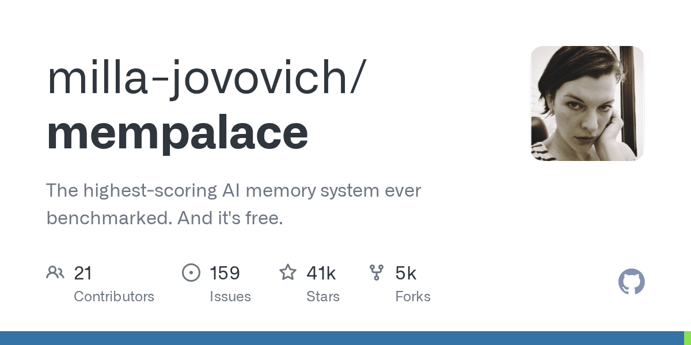
LLM과 장기 대화를 관리할 때 컨텍스트 손실과 검색 효율성 문제를 해결하기 위한 AI 메모리 시스템. 고대 그리스의 기억의 궁전(Memory Palace) 기법을 현대 AI에 적용하여, 대화를 wings(사람/프로젝트), rooms(주제), halls(기억 유형), closets(요약)으로 계층화해 저장한다. ChromaDB와 SQLite를 결합한 하이브리드 검색으로 의미 기반과 구조 기반 쿼리를 동시 처리하며, 완전 로컬 실행으로 데이터 프라이버시를 보장한다.
핵심 포인트: 핵심 성과: LongMemEval 벤치마크에서 raw mode 96.6%(R@5), hybrid mode 100% 달성하며 모든 유료 솔루션을 상회. 120토큰으로 전체 대화 컨텍스트를 30배 압축하면서도 데이터 손실 없이 처리 가능하며, MIT 라이선스 오픈소스로 완전 무료 제공.
🔗 github.com/milla-jovovich/mempalace
GitHub
Agent Skills — AI 코딩 에이전트를 위한 프로덕션급 엔지니어링 워크플로우
AI 코딩 에이전트가 작동만 하는 코드를 빠르게 만들기 위해 테스트와 보안 검토를 건너뛰는 문제를 해결하는 오픈소스 프로젝트. 6개의 슬래시 명령어로 구성된 스킬셋이 설계, 계획, 구현, 테스트, 코드 리뷰, 배포의 전체 개발 생명주기를 자동으로 활성화하여 구글 시니어 엔지니어의 업무 방식과 품질 기준을 AI 에이전트에게 일관되게 강제한다.
핵심 포인트: 핵심 기여: 6개의 슬래시 명령어(/spec, /plan, /build, /test, /review, /ship)로 소프트웨어 개발의 전체 생명주기를 정의하고, 품질 게이트와 모범 사례를 자동으로 적용하여 AI 에이전트의 코드 품질과 엔지니어링 관행을 체계적으로 관리한다.
🔗 github.com/addyosmani/agent-skills
GitHub
Career-Ops — AI 기반 자동 구직 시스템 오픈소스 공개

구직자들이 수많은 공고를 일일이 검토하고 기업마다 이력서를 수정하는 번거로운 과정의 자동화가 필요한 상황에서, Career-Ops는 개발자가 직접 740개 이상의 공고 평가와 100개 이상의 맞춤 이력서 작성으로 검증한 AI 기반 시스템이다. 45개 이상의 글로벌 IT 기업 페이지를 자동으로 모니터링하고, 공고마다 점수 평가 및 실시간 이력서 최적화, 자동 지원서 작성, 면접 준비 및 연봉 협상 시나리오까지 제공하는 종합 커리어 코칭 도구를 무료 오픈소스로 공개했다.
핵심 포인트: 핵심 성과: 개발자 본인이 실제로 Head of Applied AI 직책으로 취업에 성공한 검증된 시스템이며, 740개 공고 평가와 100개 이상 맞춤 이력서를 통해 실전 효과를 입증했다. 14가지 스킬 모드, 대시보드, PDF 생성, 배치 처리 기능을 포함한 전체 소스코드가 오픈소스로 공개되어 누구나 자신의 상황에 맞게 커스터마이징 가능하다.
🔗 github.com/santifer/career-ops
GitHub
개인 위키 — Slack 스레드 콘텐츠를 에이전트가 읽는 구조화된 문서로 변환

Slack 스레드에 산재된 콘텐츠를 구조화된 문서로 정리하여 AI 에이전트가 직접 접근 가능한 개인 위키 시스템을 구현했다. RAG 방식보다 파일 구조와 백링크 기반 네비게이션이 더 안정적이며, 매일 오전 6시 자동 갱신으로 최신 자료 탐색을 효율화한다.
핵심 포인트: 핵심 성과: 파일 구조 및 백링크 기반 탐색으로 RAG 대비 안정성 향상, 매일 오전 6시 자동 동기화로 지속적인 자료 업데이트 실현
🔗 threads.com/@choi.openai/post/DWyQUYvAQyH…
기타 (Others)
Loopndroll — Codex 에이전트를 무한 실행하는 macOS 툴바 앱
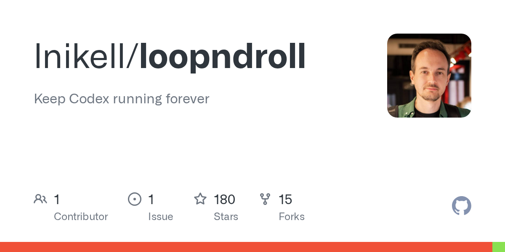
Codex 같은 코딩 에이전트가 작업 중간에 임의로 루프를 종료하는 문제를 해결하는 오픈소스 도구. Codex의 Hooks 기능을 활용해 에이전트가 오류로 중단되거나 작업을 포기하지 않도록 강제하며, 테스트 통과까지 지속적으로 작업을 반복하도록 설계되었다. Alex Barashkov가 개발했으며 GitHub에서 공개되었다.
핵심 포인트: 핵심 기여: Hooks 기능을 접착제로 활용하여 에이전트의 비자발적 작업 중단 문제를 근본적으로 해결하고, 무한 루프 작업 흐름을 안정적으로 구현.
🔗 github.com/lnikell/loopndroll
GitHub
React Native WebGPU — URL 기반 실시간 3D 애니메이션 데모
개발자들이 React Native에서 고성능 그래픽을 구현하기 어려운 문제를 해결하기 위해 엔조 마누엘 망가노가 WebGPU 기술을 활용한 오픈소스 애니메이션 라이브러리를 공개했다. 입력한 URL에 따라 나무 형태가 실시간으로 변하고, 3D 시점 전환 시 QR 코드로 작동하는 인터랙티브 데모를 포함해 110개 이상의 애니메이션 코드를 깃허브에서 무료로 제공한다.
핵심 포인트: 핵심 성과: React Native WebGPU를 활용한 110개 이상의 오픈소스 애니메이션 코드 공개, URL 기반 실시간 3D 렌더링과 동적 QR 코드 생성 기능 구현
🔗 github.com/enzomanuelmangano/demos
GitHub
Claude Code Dashboard — 터미널 명령어를 통합 대시보드로 관리

개발자들이 지침, 스킬, 에이전트, 훅, 커넥터 등을 관리할 때 터미널에서 하나하나 확인하는 번거로움을 겪고 있다. 이 대시보드는 모든 설정을 한 화면에서 시각화하고 관리할 수 있게 통합했다. 에이전트 배치 현황 편집, 스킬 생성 및 복사, 훅 원클릭 삭제/토글, 활성 세션 실시간 모니터링, 프로젝트 자동 분석으로 추천 지침 생성, 프로젝트 간 설정 복제, 텔레그램 승인 알림 등의 기능을 제공한다.
핵심 포인트: 핵심 성과: 에이전트 23개 배치 현황 관리, 프로젝트별 CLAUDE.md 편집, 설정 복제로 프로젝트 간 한 번에 적용 가능, 텔레그램 통합 알림으로 워크플로우 자동화.
🔗 youtube.com/watch?v=yey_9vhLRmY
블로그 (Blog)
Claude Code × LangSmith: 에이전트 실행 추적 플러그인 출시
프로덕션 에이전트 시스템에서 서브에이전트 실행, 도구 호출, 컨텍스트 압축 과정 중 발생하는 무음 실패와 예상치 못한 출력 문제를 해결하기 위해 Claude Code 실행을 LangSmith에 추적하는 플러그인을 출시했다. 서브에이전트와 압축 실행에 대한 완전한 가시성을 제공하며, 평가 실행, 조직 전체 트렌드 분석, 토큰 사용량 추적을 통해 에이전트 워크플로우 성능 저하의 원인을 파악할 수 있다.
핵심 포인트: 핵심 성과: 기존 옵저버빌리티 도구가 누락한 서브에이전트 추적과 압축 실행 추적으로 프로덕션 에이전트 시스템의 무음 실패를 디버깅 가능하게 함. 스킬 및 MCP 평가와 LangSmith Insights를 결합하여 AI 시스템을 위한 APM(Application Performance Monitoring) 수준의 모니터링 제공.
🔗 linkedin.com/posts/claude-code-langsmith…
기타 (Others)
Claude Code 2.1.90 — /powerup 인터랙티브 데모와 O(n²) 성능 병목 해결
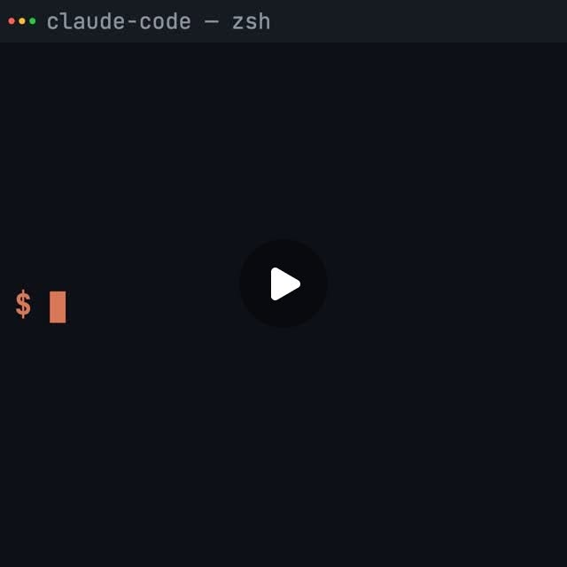
Claude Code의 기능 학습 과정에서 문서 기반 학습만 가능했던 문제를 /powerup 명령어로 애니메이션 데모와 함께 인터랙티브하게 학습할 수 있도록 개선했다. 동시에 SSE 대용량 프레임 처리, MCP 스키마 직렬화, 트랜스크립트 쓰기, 프로젝트 세션 로딩 등 핵심 경로의 O(n²) 성능 병목을 모두 선형 시간 또는 병렬 처리로 최적화했다. 사용량 한도 크래시, 프롬프트 캐시 미스, Auto 모드 제약 무시 등의 버그와 PowerShell 권한 검사 취약점도 해결했다.
핵심 포인트: 핵심 성과: SSE/SDK 핵심 경로의 성능을 이차 시간에서 선형 시간으로 개선하고, 프로젝트 세션 병렬 로딩으로 대기 시간 단축, /powerup으로 인터랙티브 학습 지원, 보안 취약점 차단 및 다중 회귀 버그 수정 완료.
🔗 threads.com/@ok_min87/post/DWnL5r6E69G?xm…
기타 (Others)
systempromptsleaks — 주요 AI 모델의 비공개 시스템 프롬프트 35K 스타 레포
AI 회사들이 공개하지 않는 시스템 프롬프트를 수집한 GitHub 레포지토리. GPT-5.4, Claude Opus 4.6, Gemini 3.1 Pro, Grok 4.2 등 주요 AI 모델과 코딩 어시스턴트의 프로덕션 레벨 시스템 프롬프트를 정기적으로 업데이트하며 공개한다. 각 모델별 프롬프트 구조와 설계 철학을 직접 비교할 수 있는 드문 자료로, 프롬프트 엔지니어링을 실전으로 배우는 가장 효율적인 방법을 제공한다.
핵심 포인트: 핵심 가치: 프로덕션 레벨의 실제 시스템 프롬프트를 통해 각 AI 모델의 설계 철학과 프롬프트 구조 차이를 직접 비교 분석 가능하며, 이론 학습보다 실전 프롬프트 엔지니어링 습득에 최적화된 자료.
🔗 github.com/asgeirtj/system_prompts_leaks
GitHub
PRODUCT & INDUSTRY
Gemini Notebooks — 제미나이와 NotebookLM 연동 프로젝트 관리 기능

AI 작업 흐름에서 대화 기록과 문서를 효율적으로 관리하기 어려운 문제를 해결하기 위해 구글이 제미나이 앱에 노트북 기능을 추가했다. 사용자는 과거 대화, PDF, 파일을 프로젝트 단위로 통합 보관하고, NotebookLM과 완벽 동기화되어 제미나이에서 수집한 자료의 맥락을 유지하면서 시각화 자료와 팟캐스트를 자동 생성할 수 있다.
핵심 포인트: 핵심 기여: 제미나이와 NotebookLM 간 완벽한 동기화로 대화 기록부터 최종 산출물(시각화, 팟캐스트)까지 일관된 맥락 유지, 프로젝트 기반 자료 통합 관리로 지식 작업 공간 통합
🔗 blog.google/innovation-and-ai/products/ge…
블로그 (Blog)
ULTRAPLAN — Claude의 클라우드 기반 30분 코드 계획 기능 정식 출시
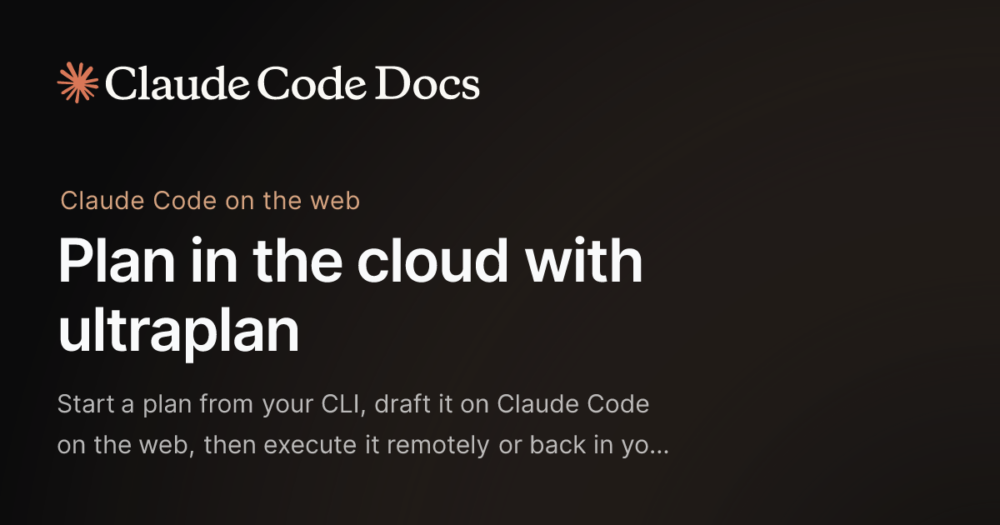
소스코드 유출 때 발견되었던 ULTRAPLAN이 research preview로 정식 공개되었다. 터미널에서 시작한 개발 계획을 클라우드의 Claude Code 세션으로 전송하여 30분 내 플랜을 수립하고, 브라우저에서 인라인 코멘트와 이모지 반응으로 검토한 후 수정을 반복할 수 있다. 플랜 완성 후 클라우드에서 직접 구현하거나 터미널로 되돌려 병렬 실행 없이 로컬에서 진행할 수 있으며, 타사 하네스 구독 차단 및 무료 크레딧 배포와 같은 날 발표되어 전략적 타이밍이 주목된다.
핵심 포인트: 핵심 기여: 터미널-클라우드 간 양방향 플랜 송수신으로 코드 작성 전 충분한 검토 및 반복 수정이 가능하며, /ultraplan 명령어 또는 일반 프롬프트 내 단어 삽입 등 세 가지 실행 방식을 제공한다.
🔗 code.claude.com/docs/en/ultraplan
기타 (Others)
Chrome: 수직 탭 기능과 몰입형 읽기 모드 공식 도입
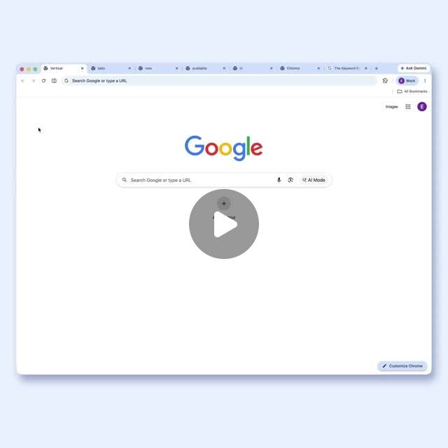
Chrome 브라우저에서 많은 탭을 열 때 탭 제목이 잘려서 식별하기 어려운 문제를 해결하기 위해 Google이 수직 탭 기능을 공식 도입했다. 탭을 화면 옆으로 배치하여 제목이 완전히 표시되고 한눈에 파악할 수 있도록 개선했으며, 함께 시각적 방해 요소를 제거한 몰입형 읽기 모드도 추가했다. 사용자는 chrome://flags에서 vertical tabs를 검색하여 활성화할 수 있다.
핵심 포인트: 핵심 성과: 수직 탭 배치로 탭 제목 전체 표시 및 시인성 개선, 몰입형 읽기 모드로 콘텐츠 집중도 향상
🔗 threads.com/@choi.openai/post/DW3WlS_DXKW…
기타 (Others)
kordoc-ai — 프로토타입의 킬러 피처 공개 예정

kordoc-ai 프로토타입 개발팀이 핵심 기능으로 평가하는 킬러 피처를 준비 중이다. 현재 최종 버그 수정 단계에 있으며, 팔로워 3000명을 넘기면 이 기능을 공개할 예정이다. 주말 집중 코딩으로 48시간 내 완성을 목표로 진행 중이며, 개발 과정 전반을 공개할 계획을 세우고 있다.
핵심 포인트: 핵심 내용: kordoc-ai의 차별화된 킬러 피처를 개발 중이며, 팔로워 3000명 달성 시 전체 기능 공개 및 상세 설명 예정.
🔗 threads.com/@chris_gomdori/post/DWutGG5k7…
기타 (Others)
Anthropic — 유출 소스코드에서 발견된 상반된 AI 저작권 표시 시스템
Anthropic의 Claude Code 소스코드 유출 사건에서 두 가지 상충하는 기능이 동시에 발견되었다. 사용자 코드에는 자동으로 ‘Co-Authored-By: Claude’를 붙이는 기능과 직원 코드에서는 AI 흔적을 제거하는 undercover.ts 모듈이 확인되었다. 법적으로 ‘co-authored by’는 저작권과 권리를 의미하므로 단순 컨벤션이 아닌 저작권 표시의 이중 기준 문제로 지적되고 있다.
핵심 포인트: 핵심 이슈: 사용자에게는 AI 공동저작 표시를 강제하면서 내부 직원 코드에서는 강제 해제 불가능한 undercover.ts 모듈로 AI 흔적을 삭제하는 이중 기준 발견. Claude Code의 설정 파일 누락으로 512,000줄 1,900개 파일의 전체 소스코드가 공개되어 연매출 약 3조 4천억원 제품의 보안 문제가 심화됨.
🔗 axios.com/2026/03/31/anthropic-leaked-sou…
기타 (Others)
Claude Managed Agents — 모델 진화에 따른 에이전트 코드 부채 해결

AI 모델이 버전업될 때마다 이전 세대의 한계를 보완하던 에이전트 제어 루프(harness) 코드들이 족쇄가 되는 문제를 해결한다. Anthropic의 Managed Agents는 세션, 하네스, 샌드박스를 완벽히 분리한 아키텍처로 인터페이스는 엄격하게 유지하면서 내부 구현은 자유롭게 진화시킨다. 이를 통해 개발자는 인프라, 상태 관리, 보안 구성 같은 운영 오버헤드 없이 프로토타입부터 프로덕션까지 수일 만에 배포할 수 있다.
핵심 포인트: 핵심 성과: 클라우드 호스팅 에이전트 인프라로 개발 주기를 수개월에서 수일로 단축하고, 모델 업그레이드 시 기존 harness 코드를 완전히 재작성하지 않아도 되는 구조 실현.
🔗 blog.langchain.com/langgraph-platform-ann…
기타 (Others)
Claude Managed Agents: 에이전트 배포 시간 10배 단축
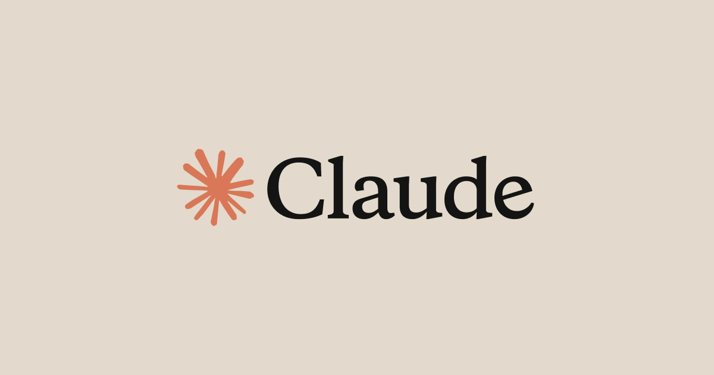
기업들이 AI 에이전트를 프로덕션 환경에 배포할 때 인프라 구축과 상태 관리, 권한 설정 등으로 수개월이 소요되는 문제를 해결하기 위해 앤트로픽이 Claude Managed Agents를 공개했다. 구성 가능한 API 모음과 프로덕션 인프라를 제공하여 작업과 도구, 가드레일만 설정하면 프로토타입에서 배포까지 며칠 만에 완성할 수 있게 했다. Notion, Asana, Rakuten, Sentry 등 주요 기업들이 몇 주 내에 실무 에이전트를 구현했다.
핵심 포인트: 핵심 성과: 에이전트 개발 사이클을 수개월에서 며칠로 단축하고 운영 오버헤드를 제거하여 10배 빠른 프로덕션 배포 달성. 단일 작업 실행부터 복잡한 다중 에이전트 파이프라인까지 확장 가능한 클라우드 호스팅 인프라 제공.
🔗 claude.com/blog/claude-managed-agents
기타 (Others)